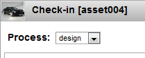
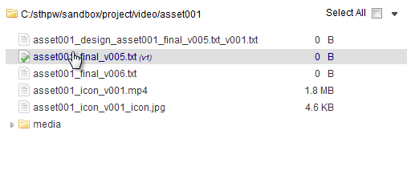
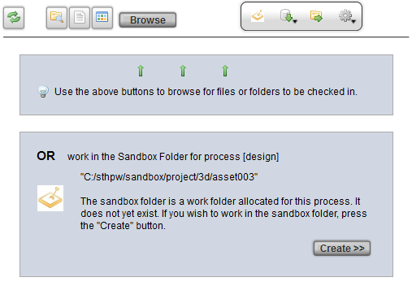
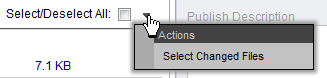
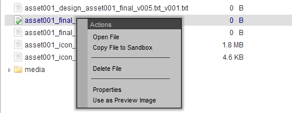
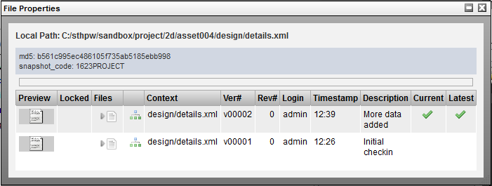
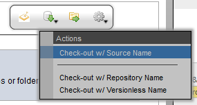
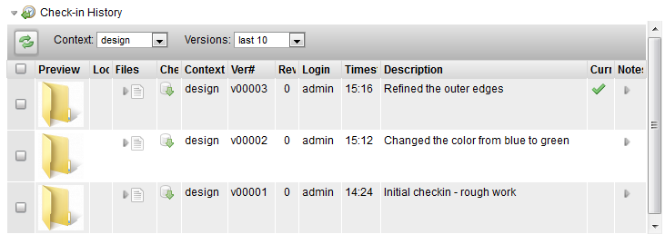
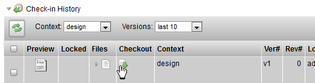

General Check-in
Introduction
The General Check-in widget provides interface to do many of the most common kinds of check-ins used in TACTIC. It is a highly configurable widget that allows a project to have customized check-ins for any part of the content creation process.
Check-ins are the ability to in TACTIC to take files that have been created and submitting them to TACTIC’s central repository to be organized, stored and versioned. TACTIC has a comprehensive ability to track files and their histories with the added benefit of enforcing naming conventions.
The general check-in widget can handle:
-
Single Files - An image, video, document, etc
-
Sequences - Commonly image sequences
-
Directories - Full directories including files and sub folders
-
Complex packages - Handling of a project source including project and source medial files.
Interface
The interface below shows a standard example of the General Check-in widget.

Tool bar
The tool bar contains a number of use functions.
Refresh |
Refreshes the whole widget and will also rescan the sandbox for any changes. |
Browse to working folder |
Allows the user to browse to a new location for the working area. |
Set to My Documents |
Sets the working area to the My Documents directory |
Set to Desktop |
Sets the working area to the Desktop directory. |
Browse |
Allows the user to select file(s) or directories to check in directly. |
Set Sandbox |
Set the sandbox automatically based on the naming conventions. This makes setting up a workspace very easy and organized. |
Check-out tools |
Tools to assist in Checking out files. Described in the section "Check-out" below |
Explore Sandbox |
Opens up the folder directly on the users computer. This allows for the quick copying and pasting files into your sandbox workspace. |
Process Select
Check-ins for an item are always classified by a processes. TACTIC organizes all of the check-ins with various processes that are defined for that item. The current process can be selected by the process selection drop-down. This often times corresponds to a task assigned to that user for that process.

This will only show up if a pipeline has been defined for the item. If no pipeline has been defined, then a default process called "publish" is used.
Often this selection will be locked because it is associated with an assigned task. A user will often work from a task also associated within a particular process and then choose to check in files based on content created from this task.
Sandbox Area

On first load of a new task (process) the check-in widget will assist the user in setting up a work area.
The user experience protocol will determine how the user leverages the features in the sandbox. The recommended approach is to allow TACTIC to create a sandbox location for the current process. This method is beneficial because it helps the user organize work-up files before they are even checked into the server. This approach is recommended because it creates an easy accessible and well organized file system on the users computer. It is however, possible to check in files from another location on the file server using the browse buttons in the tool bar.

During the content creation process, users will create files and save them under this sandbox folder. All files associated with this item should be stored here. It should be noted that this sandbox work area is not strictly enforced and it is easily possible to navigate to other folders to check in files to a given asset. However, it is considered good practice to have user’s create files in a well defined location in order to more easily manage overall disk space usage.
Any files created in the sandbox area will be display in this section. If any new files have been created and are not reflected in the interface, then a simple refresh should make these new files appear.
Files that have been checked-in will show a small indicator in the icon to the right and will be colored in blue. The small indicator will either be a green check mark, which indicates that the file in the sandbox is identical to the checked in file. If the indicator is a red exclamation mark, this means that the file has been changed and is different from the checked in file.
To select all files in the sandbox area check off the "Select/Deselect All" check-box on the top right hand side.
To quickly select all changed files, click on the arrow to open up extra menus and select "Select Changed Files".

All files that have been changed since the last check-in will be selected. TACTIC will remember the last subcontext checked in for this file so. This allows changed files to be easily rechecked in when changes have been made.
Clicking on the right mouse button of any file will open up a context menu.

The following actions are available:
Open File |
Open the file using the application as set up by the client operating system. |
Delete File |
Permanently delete the file from the sandbox area (and on the computer). |
Properties |
Open up a pop-up showing the properties of this file, including all past check in information. An example is shown below: |

Check-In
When any files are ready to be checked in, they can be selected. The row will highlight for all selected files, and either a selection list, or a text box will appear on the right side. Since many files can be checked into the same process in an asset, this provides a sub-category to organize checked in assets (this is known as the subcontext of the context of a check-in). By default, this should read (auto) which means that it will be automatically filled in.
When all of the files that need to be checked in have been selected, the check in widget will be enabled.
It’s good practice to add a note in the Description field while performing a check-in. This is important so all project users understand why a particular check-in was made, and where it’s located.
When the "Check-in" button is pressed, all of the selected files will be transferred to TACTIC’s repository. There are a number of ways that the files can be configured to transfer files. When TACTIC checks in a file, it will move them to the correct folder, version and rename them to the correct file name as specified for the naming conventions.
Check-in Subcontext types
When checking in, a drop-down is available beside each file or directory. This functionality allows control over how each check-in will be handled. This type of control is called subcontext. This can be looked at as a sub process for the sub-directories included in a check-in.
Auto
The "Auto" mode is used if it’s desired to keep file names the same as they are before the check in . This work-flow is beneficial if one wishes to keep file names, or work in a situation such at subversion where files are constantly overwritten and versions are handled automatically in the background.
Sandbox |
SANDBOX/project/assets/asset001/design/original_file.jpg |
Check-in |
[multiblock cell omitted] |
Check-out |
SANDBOX/projcet/assets/asset001/design/original_file.jpg |
Main
If only one file/directory/sequence is going to be checked-in, it will also be re-named correctly by the naming conventions. This is often the case when files are delivered to another department or the client.
Sandbox |
SANDBOX/projcet/assets/asset001/design/original_file.jpg |
Check-in |
SERVER/project/assets/asset001/design/asset001_design_v001.jpg |
Check-out |
SANDBOX/projcet/assets/asset001/design/asset001_design_v001.jpg |
Text
If more than one file/directory will be checked in and strict control is required for each item, the subcontext will be different each time a check-in happens. This often applies when different variations of a check-in are required. For example a blue and a red version of a file might be needed for a particular check-in, so the user would type this in for each file:
Sandbox |
[multiblock cell omitted] |
Check-in |
[multiblock cell omitted] |
Check-out |
[multiblock cell omitted] |
List
If more than one file/directory will be checked in and strict control is required for each item, the subcontexts are the same every time a check-in occurs. This often applies when there are multiple sub-directories that need to be worked on for a task. For example, a preview, project file and a directory of media files would be organized by selecting preview, project or media in the drop-down.
Sandbox |
[multiblock cell omitted] |
Check-in |
[multiblock cell omitted] |
Check-out |
[multiblock cell omitted] |
Note
Often these options are predetermined by the pipeline configuration set up by the TACTIC administrator. Other combinations file/directory naming and file version control can also be configured through naming conventions.
Check-out
When working on a particular task that is part of a pipeline, files may need to be checked out or "downloaded" to be worked on or revised. TACTIC assists with this process and allows easy access to retrieving the right files/directories from the TACTIC server.
Check-out Options

A specific version can be checked out through the Check-out button in the History area. There are also more advanced options available in the Check-out options menu.
Check-out w/ Source Name |
Check out the latest version of different contexts based on the original file name that was checked in regardless of naming conventions. |
Check-out w/ Repository Name |
Check out the latest version of different contexts using the repository names as seen in the TACTIC repo. |
Check-out w/ Versionless Name |
Verisonless check-ins only - Check out the latest versionless of different contexts using the the versionless convention as seen in the TACTIC repo. |
History
This area shows the check-in history. By default, this information is collapsed but can be accessed by clicking on Check-in history.

